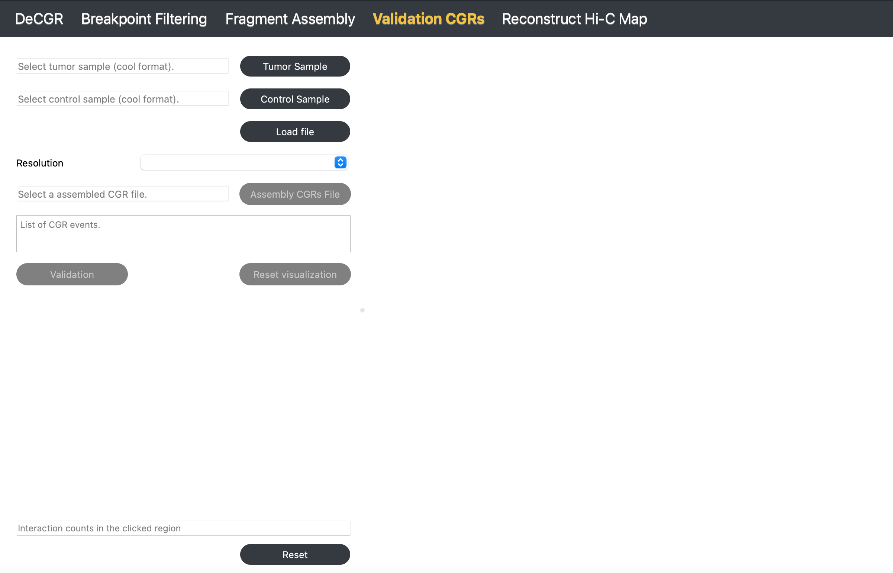

Validation CGRs
The Validation CGRs module allows users to verify the completeness and accuracy of the assembled CGRs.
{kind=link}
Inputs
The input files for this module must include the following:
A tumor Hi-C sample in mcool or cool format.
A normal Hi-C sample in mcool or cool format.
A assembled CGRs file, which contains assembled CGRs events, is formatted as follows:
haed K562_chr18_assembly_result.txt
num chrom start end node orient
1 chr18 150000 450000 A +
1 chr18 21900000 23700000 F +
1 chr18 8100000 10850000 E +
1 chr18 1650000 3450000 C -
2 chr18 450000 800000 B -
2 chr18 3450000 3850000 G +
3 chr18 7450000 7700000 D -
3 chr18 25900000 26500000 H +
Guideline
Step 1: Load Tumor and Control Samples
Click Tumor Sample to select a tumor Hi-C file, then click Control Sample to select a normal Hi-C file. Click Load to import both files.
Step 2: Select Resolution
Once both Hi-C files are loaded, use the Resolution dropdown menu to select the desired resolution.
Step 3: Load Assembled CGRs File
Click Assembly CGRs File to select a file containing assembled CGRs results.
Step 4: Validate CGRs with Simulated Hi-C Map
Click Validation to generate a simulated Hi-C map. The results will display on the right, allowing you to visually compare abnormal interaction regions in the original and simulated Hi-C maps for validation.
Step 5: Reset Visualization for New Validation
Click Reset Visualization to load a new assembled CGRs file for validation.
To reinitialize the module, click Reset.
{kind=link}